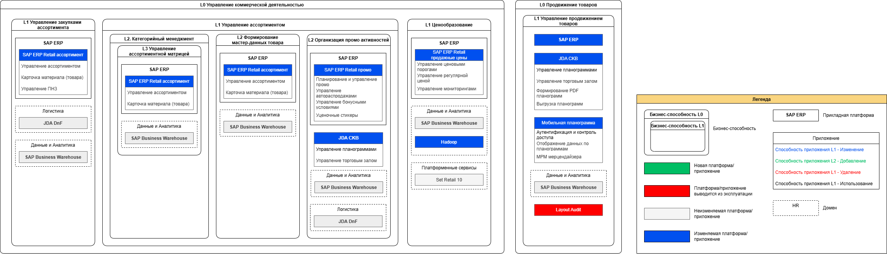
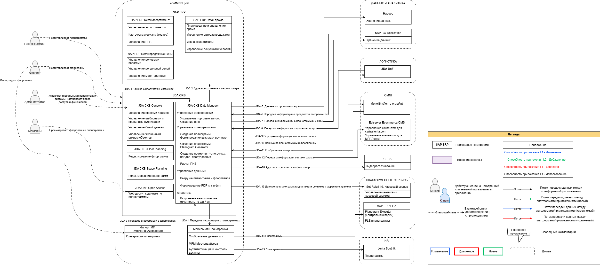

1.2.3.1. JDA CKB as-is (На изменении 31.06 )
Контекст и требования
Замена JDA CKB - системы планограммирования и флорпланирования - вследствие падения производительности текущего решения при росте объема данных, архитектурной негибкости и отсутствия вендорской поддержки.
Бизнес-архитектура: отображение отношения функциональности ИТ-решения (способностей приложений) к бизнес-способностям

Прикладная архитектура и потоки данных: отображение платформ/приложений в составе ИТ-решения и их взаимодействий

Реестр приложений:
Домен | ID Приложения | Краткое наименование приложения | Способность приложения | Суть изменения | Тип изменения | Комментарий |
| Коммерция | 1 | SAP ERP Retail ассортимент | Управление ассортиментом, Карточка материала (товара), Управление ПНЗ | ИСПОЛЬЗУЕМОЕ | ||
| Коммерция | 2 | SAP ERP Retail промо | Планирование и управление промо, Управление автораспродажами, Уценочные стикеры, Управление бонусными условиями | ИСПОЛЬЗУЕМОЕ | ||
| Коммерция | 3 | SAP ERP Retail продажные цены | Управление ценовыми порогами, Управление регулярной ценой, Управление мониторингами | ИСПОЛЬЗУЕМОЕ | ||
| Коммерция | 4 | JDA CKB Console | Управление правами доступа, Управление шаблонами и правилами публикации, Управление базой данных, Управление жизненным циклом объектов | ИСПОЛЬЗУЕМОЕ | ||
| Коммерция | 5 | JDA CKB Floor Planning | Редактирование флорпланов | ИСПОЛЬЗУЕМОЕ | ||
| Коммерция | 6 | JDA CKB Space Planning | Редактирование планограмм | ИСПОЛЬЗУЕМОЕ | ||
| Коммерция | 7 | JDA CKB Open Access | Web доступ к данным по планограммам | ИСПОЛЬЗУЕМОЕ | ||
| Коммерция | 8 | JDA CKB Data Manager | Управление торговым залом. Создание флорпланов, Создание планограмм. Формирование выкладки вручную, Создание планограмм. Planogram Generator, Создание промо-плг - списочных, плг доп. оборудования, Расчет ПНЗ, Выгрузка планограмм и флорпланов, Формирование PDF планограмм и флорпланов, Встроенная аналитическая отчетность по флг/плг | ИСПОЛЬЗУЕМОЕ | ||
| Коммерция | 9 | Импорт МП (Мерчплан/Флорплан) | Конвертация планировки | ИСПОЛЬЗУЕМОЕ | ||
| Коммерция | 10 | Мобильная Планограмма | Отображение данных планограммы, MPM Мерчендайзера, Аутентификация и контроль доступа | ИСПОЛЬЗУЕМОЕ | ||
| Данные и аналитика | 11 | Hadoop | Хранение данных | ИСПОЛЬЗУЕМОЕ | ||
| Данные и аналитика | 12 | SAP BW Application | Хранение данных | |||
| OMNI | 13 | Monolith (Лента онлайн) | ИСПОЛЬЗУЕМОЕ | |||
| OMNI | 14 | Episerver Ecommerce/CMS | Управление контентом для сайта lenta.com, Управление контентом для МП "Лента" | ИСПОЛЬЗУЕМОЕ | ||
| Платформенные сервисы | 15 | Set Retail 10. Кассовый сервер | Управление ценниками кассовой системы | ИСПОЛЬЗУЕМОЕ | ||
| Платформенные сервисы | 16 | SAP ERP PDA | Planogram Executor (Контроль выкладки), PLE планограммы | ИСПОЛЬЗУЕМОЕ | ||
| HR | 17 | Lenta Sputnik | Планограмма | ИСПОЛЬЗУЕМОЕ | ||
| 18 | CERA | Видеораспознавание | ИСПОЛЬЗУЕМОЕ |
Реестр потоков данных:
ID Потока данных | Название потока | Название в CKB | Действие с потоком данных | Источник | Получатель | Инициатор передачи данных | Информационный объект | Атрибуты информационного объекта | Инструмент интеграции | Тип интеграции | Технология интеграции | Триггер | Периодичность | Техническое окно передачи данных | Объем данных - Количество строк, передаваемых строк по расписанию | Объем данных - Количество строк при Full | Название задания батча | НФТ к потоку данных | Комментарий |
|---|---|---|---|---|---|---|---|---|---|---|---|---|---|---|---|---|---|---|---|
JDA-1 | Интерфейс импорта данных о продуктах | SX_ITF_SPC_PRODUCT | - | SAP ERP | JDA CKB | SAP ERP | Данные о продуктах | Техническое задание на разработку интерфейсов | SAP PO | СИНХРОННАЯ | JDBC | Автоматический запуск по расписанию | Ежедневно | 1:30 | 50000 | - | RM | На стороне CKB данные должны быть получены до 2:00 | По времени запуска - непрерывно с 9 до 21, затем по мере изменений |
| Интерфейсы импорта справочников | SX_ITF_CLASSIFIER_CAT SX_ITF_CLASSIFIER_SUBCAT SX_ITF_BRAND SX_ITF_SUPPLY_GROUP SX_ITF_CLASSIFIER_SUBSUBCAT | - | SAP ERP | JDA CKB | SAP ERP |
| Техническое задание на разработку интерфейсов | SAP PO | СИНХРОННАЯ | JDBC | Автоматический запуск по расписанию | Ежедневно | 1:30 | SX_ITF_CLASSIFIER_CAT - 100 SX_ITF_CLASSIFIER_SUBCAT - 1300 SX_ITF_BRAND - 20000 SX_ITF_SUPPLY_GROUP - 160 SX_ITF_CLASSIFIER_SUBSUBCAT - 8000 | - | RM | На стороне CKB данные должны быть получены до 2:00 | По времени запуска - ежедневно в 19:15 | |
| Интерфейс импорта данных об иерархии продуктов | SX_ITF_PRODUCT_HIERARCHY | - | SAP ERP | JDA CKB | SAP ERP | Иерархия продуктов | Техническое задание на разработку интерфейсов | SAP PO | СИНХРОННАЯ | JDBC | Автоматический запуск по расписанию | Ежедневно | 1:30 | 10000 | - | RM | На стороне CKB данные должны быть получены до 2:00 | ||
| Интерфейс импорта данных о присвоении иерархии продуктов | SX_ITF_PRODUCT_HIER_LINK | - | SAP ERP | JDA CKB | SAP ERP | Атрибуты иерархии продуктов | Техническое задание на разработку интерфейсов | SAP PO | СИНХРОННАЯ | JDBC | Автоматический запуск по расписанию | Ежедневно | 1:30 | 5000 | 800000 | RM | На стороне CKB данные должны быть получены до 2:00 | ||
| Интерфейс импорта данных об ассортиментной матрице (промо-планограммы) полей | SX_ITF_ASSORTMENT_PROMO | - | SAP ERP | JDA CKB | SAP ERP | Данные о ассортиментной матрице по промо-продуктам | Техническое задание на разработку интерфейсов | SAP PO | СИНХРОННАЯ | JDBC | Автоматический запуск по расписанию | Ежедневно | 1:30 | 18000000 | - | RM | На стороне CKB данные должны быть получены до 2:00 | Если в системе источнике - тогда запуск в 20:00 | |
| Интерфейс импорта данных о магазинах | SX_ITF_SITES | - | SAP ERP | JDA CKB | SAP ERP | Данные о магазинах | Техническое задание на разработку интерфейсов | SAP PO | СИНХРОННАЯ | JDBC | Автоматический запуск по расписанию | Ежедневно | 1:30 | 2000 | - | RM | На стороне CKB данные должны быть получены до 2:00 | ||
| Интерфейс импорта данных по признаку ТОП | cx_itf_top | - | SAP ERP | JDA CKB | SAP ERP | Данные по признаку TOP | SAP PO | СИНХРОННАЯ | JDBC | Автоматический запуск по расписанию | full - 1 раз в 2 месяца (периодичность может меняться, устанавливается в SAP ERP), delta - при добавление нового ТК в кластер, по событию. Обработка на стороне JDA ежедневно. | 2:00 | 350000 | 500000 | RM | На стороне CKB данные должны быть получены до 2:00 | Система источник - время старта передачи 18:30 | ||
| Интерфейс импорта данных кванту поставки товаров | cx_itf_quantum | - | SAP ERP | JDA CKB | SAP ERP | Данные по кванту поставки товаров "Quantum" | Техническое задание на разработку интерфейсов | SAP PO | СИНХРОННАЯ | JDBC | Автоматический запуск по расписанию | Ежедневно | 2:00 | 10000 | 40000000 | RM | На стороне CKB данные должны быть получены до 2:00 | ||
| JDA-2 | Адресное хранение и инфо о товаре | PLANOGRAM EXECUTER | - | JDA CKB | SAP ERP | SAP ERP | Данные по планограммам для использования при сортировке / группировке при печати ценников и адресного хранения | RFC-024477 Planogram Executor в PDA | SAP PO | СИНХРОННАЯ | Нет данных | Инициируется пользователем | По событию | - | 1000000 | - | - | Нет данных | |
| JDA-3 | Передача информации о флорпланах | - | - | Импорт МП (Мерчплан/Флорплан) | JDA CKB | Импорт МП (Мерчплан/Флорплан) | Планировка торгового зала | Создание мерчендайзинг плана в Нанокад | Прямой вызов API | СИНХРОННАЯ | Прямой вызов | Инициируется пользователем | По событию | - | По запросу | По запросу | - | Нет данных | |
JDA-4 | Передача информации о планограммах | SendToMP | - | JDA CKB | Мобильная планограмма | JDA CKB |
| Мобильная планограмма | CKB напрямую в PostgreSQL, PostgreSQL по API в Лента Спутник | Нет данных | Нет данных | Автоматический запуск по расписанию | Ежедневно | 06:30 - 08:00 |
|
| SendPlgExpToMP_Full | На стороне CKB расчет до 8:00 | |
JDA-5 | Данные по промо-выкладке | cx_commercial_DMP | - | JDA CKB | Hadoop | Hadoop | Данные по промо-выкладке | PROMTPRED-74 PromoTool CKB Разработка спецификации и реализация | Забирает напрямую | СИНХРОННАЯ | Прямой вызов | Автоматический запуск по расписанию | Ежедневно | 06:15 | 250000 | - | PromoTool | Нет данных | Джоб PromoTool |
JDA-6 | Интерфейс импорта данных о продажах (5 суббот) | SX_ITF_SALES_WEEKS | - | SAP BW Application | JDA CKB Data Manager | SAP BW Application | Данные о продажах за период 5 предыдущих суббот | Техническое задание на разработку интерфейсов | SAP PO | СИНХРОННАЯ | JDBC | Автоматический запуск по расписанию | Еженедельно | 01:30 (в ночь с воскресенья на понедельник) | 9000000 | - | RM | На стороне CKB данные должны быть получены до 2:00 | |
| Интерфейс импорта данных о продажах (3 периода) | SX_ITF_SALES_MONTHS | - | SAP BW Application | JDA CKB Data Manager | SAP BW Application | Данные о продажах за 3 периода (3, 6, 12 месяцев) | Техническое задание на разработку интерфейсов | SAP PO | СИНХРОННАЯ | JDBC | Автоматический запуск по расписанию | Ежемесячно | 01:30 (в ночь с 9 на 10 число) | - | - | - | - | Поток отключен | |
Интерфейс импорта данных об ассортиментной матрице (регулярные планограммы) | SX_ITF_ASSORTMENT_REGULAR | - | SAP BW Application | JDA CKB Data Manager | SAP BW Application | Данные об ассортиментной матрице (регулярные планограммы) | Техническое задание на разработку интерфейсов | SAP PO | СИНХРОННАЯ | JDBC | Автоматический запуск по расписанию | Ежедневно, кроме пятницы и субботы | 1:30 | 12000000 | - | RM | На стороне CKB данные должны быть получены до 2:00 | ||
Интерфейс импорта данных о продажах (Промо планограммы) | SX_ITF_SALES_PROMO | - | SAP BW Application | JDA CKB Data Manager | SAP BW Application | Данные о продажах (Промо планограммы) | Техническое задание на разработку интерфейсов | SAP PO | СИНХРОННАЯ | JDBC | Автоматический запуск по расписанию | Ежедневно | 1:30 | - | - | - | - | Поток отключен | |
JDA-7 | Экспорт позиций, присвоенных промо планограммам | SX_ITF_PROMO_ITEMS | - | JDA CKB | SAP BW Application | JDA CKB | Данные о продуктах, находящихся на промо-планограммах | Техническое задание на разработку интерфейсов | SAP PO | СИНХРОННАЯ | JDBC | Автоматический запуск по событию или инициируется пользователем | По событию | Если промо-планограмма меняет статус с «Внедрено» на «Исторический» или по кнопке «Выгрузка промо ассортимента» | нет статистики | - | - | - | Поток отключен |
| Отчет для мониторинга мест под распродажу | - | JDA CKB | SAP BW Application | JDA CKB | 1. Ширина товаров 2. Места под распродажу в разрезе ТК/Название места с флорплана | Разработка отчёта для мониторинга мест под распродажу | SAP PO | СИНХРОННАЯ | JDBC | Автоматический запуск по расписанию | Ежедневно | 06:00 | cx_flr_places_for_sale_last - 6530 cx_spc_product_last - 430492 | - | - | Суммарное время отработки процедур cx_flr_places_for_sale_export и cx_spc_product_export не должно превышать 20 минут | Джоб "Report for monitoring places for sale" | ||
| Линейный метраж | SX_UPLOAD | - | JDA CKB | SAP BW Application | JDA CKB | Данные о линейном метраже и площади выкладки SKU по каждому ТК | Lenta_Выгрузка_Линейный метраж | SAP PO | СИНХРОННАЯ | JDBC | Автоматический запуск по расписанию | Ежедневно | 00:05 | 14000000 | - | Upload Dataset | Нет данных | ||
| Интерфейс экспорта данных о полочном запасе | SX_ITF_SHELF_STOCK | JDA CKB | SAP BW Application | JDA CKB | Полочный запас по планограммам | Техническое задание на разработку интерфейсов | SAP PO | СИНХРОННАЯ | JDBC | Автоматический запуск по расписанию | Ежедневно | 21:00, вс- 17:00 | 400000 | 13000000 | SHELF STOCK | Нет данных | |||
JDA-8 | Интерфейс импорта прогнозных данных (регулярный прогноз) | SX_ITF_FORECAST_REGULAR | - | JDA DnF | JDA CKB Data Manager | JDA DnF | Регулярные прогнозные данных | Техническое задание на разработку интерфейсов | SAP PO | СИНХРОННАЯ | JDBC | Автоматический запуск по расписанию | Еженедельно | 00:00 (в ночь с субботы на воскресенье) | 10000000 | - | RM | На стороне CKB данные должны быть получены до 2:00 | |
| Интерфейс импорта прогнозных данных (промо прогноз) | SX_ITF_FORECAST_PROMO | - | JDA DnF | JDA CKB | JDA DnF | Промо-прогноз | Техническое задание на разработку интерфейсов | SAP PO | СИНХРОННАЯ | JDBC | Автоматический запуск по расписанию | Ежедневно | 0:00 | 17000000 | - | RM | На стороне CKB данные должны быть получены до 2:00 | ||
JDA-9 | Интерфейс экспорта данных о полочном запасе | SX_ITF_SHELF_STOCK_SUM | - | JDA CKB | JDA DnF | JDA CKB | Полочный запас по планограммам | Техническое задание на разработку интерфейсов | SAP PO | СИНХРОННАЯ | JDBC | Автоматический запуск по расписанию | Ежедневно | 21:00, вс- 17:00 | 250000 | 12000000 | SHELF STOCK | На стороне CKB данные должны быть переданы до 22:00 | |
| JDA-10 | Данные по планограммам для печати ценников и адресного хранения | cx_itf_planogram_export | - | JDA CKB | Monolith (Лента онлайн) | JDA CKB | Данные по планограммам для использования при сортировке / группировке при печати ценников и адресного хранения | Оптимизация печати ценников | SAP PO | СИНХРОННАЯ | JDBC | Автоматический запуск по расписанию | Ежедневно | 06:00 | 50000 | 18000000 | Planogram_Export | Запуск расчета на стороне CKB в 6:00 Время в которое PI забирает данные из IKB при помощи процедуры cx_planogram_export_load - ежедневно с 07-00 до 14-00 |
|
| Данные по флорпланам для адресного хранения | cx_lo_floorplan_export | - | JDA CKB | Monolith (Лента онлайн) | JDA CKB | Данные по флорпланам для адресного хранения | Техническое задание на разработку интерфейсов | SAP PO | СИНХРОННАЯ | JDBC | Автоматический запуск по событию | Ежедневно | 6:30 | 600000 | 2000000 | Floorplan_export | Время отработки процедуры cx_floorplan_export не должно превышать 20 минут | Данные передаются по изменениям (Дельта ко вчерашнему дню) Запуск на стороне CKB в 6:30 | |
| JDA-11 | Изображения товаров | - | - | Monolith (Лента онлайн) | JDA CKB Data Manager | Monolith (Лента онлайн) | Изображения товаров | RFC-027183 Автоматическая подгрузка фото к товарам в Space Planning | Напрямую в сетевую папку | ФАЙЛ | Прямой вызов | Автоматический запуск по расписанию | Ежедневно | 22:00 | Все товары-новинки (кол-во разнится) | - | - | Контроль за ошибками в отправке данных лежит на стороне Ленты онлайн в виде информирования CKB о проблемах. Дополнительный контроль за качеством фото осуществляться не будет, т.к. Лента онлайн должна подготавливать фото согласно требованиям. | |
JDA-12 | Передача информации о планограммах | - | - | JDA CKB | Episerver (CMS/Ecommerce) | Нет данных | Нет данных | Нет данных | SAP PO | Нет данных | Нет данных | Нет данных | Нет данных | - | - | - | Нет данных | Нет данных | |
JDA-13 | Данные по планограммам для печати ценников и адресного хранения | cx_itf_planogram_export | - | JDA CKB | Set Retail 10 | JDA CKB | Данные по планограммам для использования при сортировке / группировке при печати ценников и адресного хранения | Оптимизация печати ценников | SAP PO | СИНХРОННАЯ | JDBC | Автоматический запуск по расписанию | Ежедневно | 06:30 | 50000 | 18000000 | Planogram_Export | Запуск расчета на стороне CKB в 6:00 Время в которое PI забирает данные из IKB при помощи процедуры cx_planogram_export_load - ежедневно с 07-00 до 14-00 | Дублирует поток JDA-10 "Данные по планограммам для печати ценников и адресного хранения" |
JDA-14 | Планограммы | - | - | Мобильные планограммы | SAP ERP PDA | SAP ERP PDA | Данные по планограммам для использования при сортировке / группировке при печати ценников и адресного хранения | RFC-024477 Planogram Executor в PDA | API | Нет данных | Нет данных | Нет данных | Нет данных | - | - | - | - | Нет данных | |
JDA-15 | Планограммы | - | - | Мобильные планограммы | Lenta Sputnik | Lenta Sputnik | Данные по планограммам для использования при сортировке / группировке при печати ценников и адресного хранения | RFC-024477 Planogram Executor в PDA | API | Нет данных | Нет данных | Нет данных | Нет данных | - | - | - | - | Нет данных | см. JDA-4 |
| JDA-16 | Адресное хранение и инфо о товаре | CX_ITF_GETPLANOGRAMVIDEO | - | JDA CKB | CERA | CERA | Данные по планограммам | CERA_Видеоразпознование | Напрямую в PostgreSQL, а оттуда забирает CERA через API | Нет данных | Нет данных | Автоматический запуск по расписанию | Ежедневно | 22:00 | 600000 | - | SendPlgVideoToCera_Full | Нет данных |
Описание заданий:
| Название задания батча | Краткое описание | Задания по количеству обрабатываемых данных с учетом роста х3 | |||||
|---|---|---|---|---|---|---|---|
| Время расчета | Кол-во объектов, участвующих в расчете (с учетом роста х3) | ||||||
| Магазины (x3) | Флорпланы (x3) | Планограммы (x3) | Продукты | Позиции | |||
| RM | Перекладывает полученные данные из интерфейсных таблиц в рабочие, делая проверки по определенным условиям, обогащает этими данными планограммы и флорпланы, убирая старое и добавляя новое, старые данные логируются + генерация планограмм на основе полученных данных. | 1 час | Все - 6000 | Все в обработке - 110000 | Все в обработке - 225000 | Среднее на магазин - 50000 | Среднее на планограмму - 165 |
| SHELF STOCK | Расчет презентационно неснижаемого запаса (ПНЗ) для отчетов BW в разрезе позиция/ТК, для DnF в разрезе товар/тк (суммарные значения по позициям). | 30 мин | Все действующие - 4500 | - | Все внедрено и ожидание - 690000 | - | Среднее на магазин - 11500 |
| Upload Dataset | Расчет линейного метража планограмм для отчетности BW. | 10 мин | Все действующие - 4500 | - | Все внедрено - 630000 | Среднее на планограмму - 100 | - |
| SendPlgVideoToCera_Full | Расчет адреса места расположения товаров в ТК из планограмм для отправки в систему видеораспознавания CERA. | 30 мин | Все действующие - 4500 | - | Все внедрено и ождидание - 690000 | Среднее на магазин - 50000 | - |
| Floorplan_export | Сборка всех необходимых данных по флорпланам для отправки в Ленту Онлайн для построения плана магазина для адресного хранения (отображает путь покупателю до места размещения товара). | 2 мин | Все действующие - 4500 | Все внедрено - 3000 | - | - | - |
| Planogram_Export | Сборка всех необходимых данных по планограммам и местам размещения товаров для отправки в Ленту Онлайн, в кассовую систему SET10, мобильную планограмму для адресного хранения товаров. | 12 мин | Все действующие - 4500 | - | Все внедрено - 630000 | Среднее на планограмму - 100 | - |
| SendPlgExpToMP_Full | Расчет данных по планограммам, флорпланам, товарам и их размещению + PDF документы для передачи в сервис мобильной планограммы для использования API. | 1 час 30 мин | Все действующие - 4500 | Все внедрено - 3000 | Все внедрено - 630000 | - | - |
| PromoTool | Предрасчет данных по количеству проданных дополнительных мест под оборудование поставщика для формирования отчетности в Hadoop. | 1 мин | Все действующие - 4500 | - | - | - | - |
Техническая архитектура: технологический стек и развертывание ИТ-решения на инфраструктуре
Выбор технологического стека (соответствие техрадару)
| Название технологии | Сектор радара | Слой AS-IS |
|---|---|---|
Реестр новых и изменяемых узлов развертывания в разрезе сред (тест, прод, дев)
Узел | Окружение | Изменяемое/Удаляемое/Новое | Инстанция приложения | Инстанция компонента приложения | Описание | Bare Metal/VMware/Kubernetes | CPU (Ядра) | RAM (ГБ) | Disk (ГБ) | Комментарий |
ADR: Записи архитектурных решений
Методология
Открытые вопросы
| Номер | Вопрос | Статус | Комментарий |
|---|---|---|---|